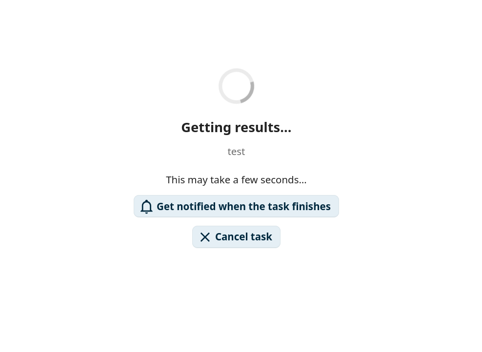
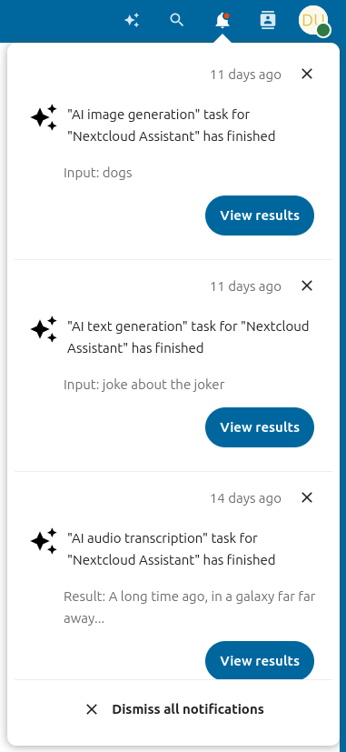
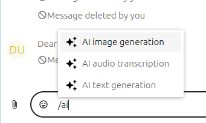
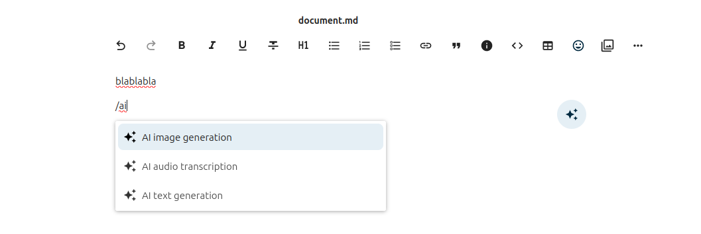

AI assistant
The Nextcloud AI assistant gives you access to AI-powered tools directly from the web interface. You can run tasks such as text summarization, image generation, and speech transcription, have back-and-forth conversations with a connected language model, and insert AI-generated content into documents and messages using smart pickers.
Merknad
The AI assistant requires at least one AI backend app to be installed and configured by your administrator. See the AI assistant administration documentation for details.
Personal settings
The assistant personal settings are in Personal settings under the Artificial intelligence section. You can disable the assistant top menu entry there, and enable or disable the AI-related smart pickers.
Running a task
To open the assistant, click the assistant icon in the top-right navigation bar.

Figure 1: The assistant icon in the top-right navigation bar.
Choose a task type at the top of the assistant panel, fill in the input form, and click the submit button at the bottom right.

Figure 2: The assistant task form.
Your task will run immediately if possible, or be scheduled for later execution.

Figure 3: Waiting for task results.
Notifications
If a task was scheduled, you can request to receive a notification when it finishes. Click the View results button in the notification to display the task output.

Figure 4: Task completion notification.
Task history
The left panel of the assistant shows a task history list filtered to the currently selected task type. You can relaunch, delete, or cancel previous tasks from this list.

Figure 5: Task history in the left panel.
Chat with AI
The Chat with AI tab in the assistant lets you have a back-and-forth conversation with the connected AI. Type a message into the text field at the bottom and press Enter to send. Click New conversation to start a separate conversation thread.

Figure 6: Chat with AI interface.
Each conversation has its own context. Toggle Remember this on a conversation to add it to the AI’s long-term memory so that its context is available in any future conversation. Toggle it off again to remove the conversation from memory.
In the AI assistant section of your Personal settings, you can review all your remembered conversations.

Figure 7: Remembered conversations listed in personal settings.
Smart pickers
The assistant app provides three smart pickers accessible in Talk, Text editor, and any other
place where rich text editing is available. Type / followed by ai to see the filtered
provider list.
In Talk:

Figure 8: AI smart picker in Talk.
In Text editor:

Figure 9: AI smart picker in the Text editor.
Any result generated through the smart picker can be inserted directly into the current context.